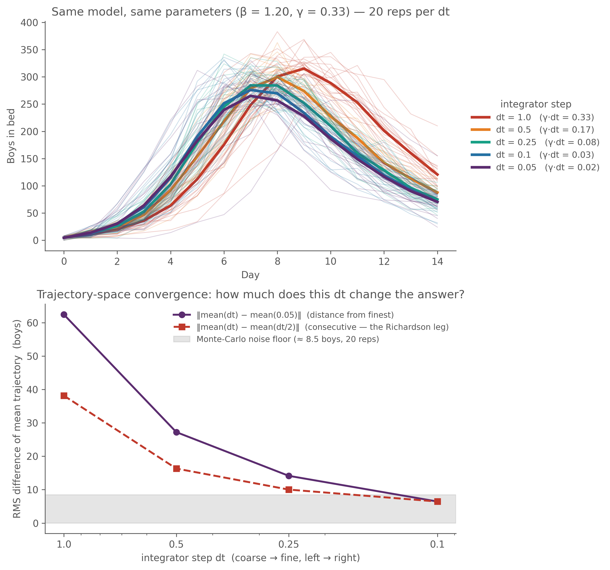
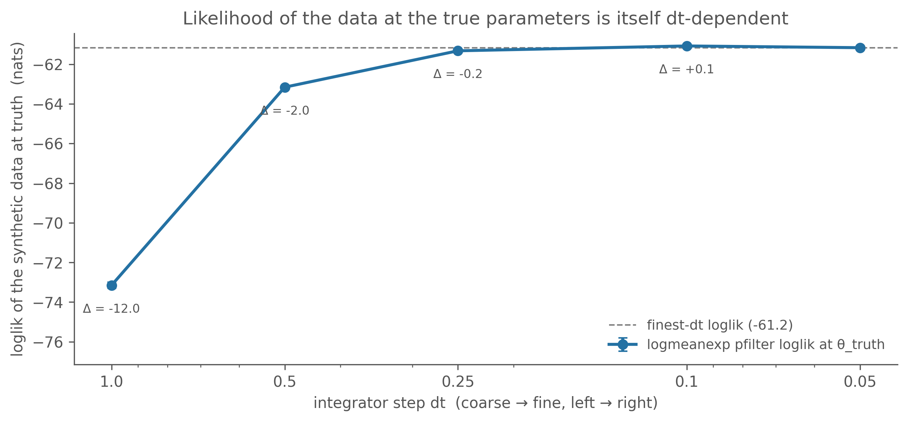

When you write a stochastic compartmental model and ask camdl to simulate or fit it, there is a number you have to pick that appears nowhere in the model file and nowhere in the parameter table: the integrator stepdt. It is tempting to treat it as a numerical nuisance — pick something “small enough,” move on. That instinct is half right and half dangerous. Small enough really is fine; but dt is part of the statistical model, not a tuning knob, and “small enough” has a precise meaning you can check before you fit and verify after. This chapter is the whole story in one place; the fitting chapters that follow assume it.
Why there’s a step at all
The “true” stochastic SIR is a continuous-time Markov jump process: each individual sits in a compartment until an exponentially-timed event moves them, with hazards \(\beta S I / N\) (infection) and \(\gamma I\) (recovery). Simulating that exactly — drawing each inter-event time — is the Gillespie algorithm; it’s correct but slow when there are many events, and it doesn’t fit cleanly into a particle filter that wants observations on a regular grid.
camdl’s chain_binomial backend uses the standard approximation instead: chop time into fixed steps of length dt, and over each step draw the number of transitions out of a compartment as \(\mathrm{Binomial}\!\big(n,\, 1 - e^{-r\,dt}\big)\) for a rate \(r\), allocating among competing exits multinomially. This is the Euler-multinomial scheme (Bretó, He, Ionides & King 2009) — the same construction pomp’s euler() uses, and a binomial-leap relative of Gillespie’s tau-leaping (Gillespie 2001). (The overdispersed() primitive — gamma white noise on a rate — is a variation on the same idea; see the Euler-multinomial section of the priors chapter.) It is exact only in the limit dt → 0. At finite dt it carries a discretization error, and the size of that error is what this chapter is about.
dt is part of the model
The Euler-multinomial approximation works by freezing every event rate at its start-of-step value and drawing the step’s transitions as if the dynamics held still over \([t, t+dt]\). That is a good approximation only when the rates really do hold roughly still over a step — i.e. when dt is short compared to the timescale on which the propensities themselves are changing. In a fast epidemic that timescale is brutally short: on the rising limb the force of infection \(\beta S I / N\) can grow by a factor of two or more inside a single day, so a one-day step freezes it at a value that’s already stale by the step’s end, and the chain-binomial outbreak crawls while the real one is sprinting — it peaks late and low.
Formally this is the leap condition (Cao, Gillespie & Petzold 2006) — “propensities mustn’t change appreciably over a step” — and it cashes out as the working bound
with discretization error \(O(dt)\) when you violate it; \(r_{\max}\) is the largest per-capita event rate at the relevant operating point. You can ballpark \(r_{\max}\) for a flu-in-a-boarding-school outbreak on a napkin: an infectious period of “a few days” puts \(\gamma \sim
0.3\)–\(0.5\ \text{day}^{-1}\), and an outbreak that rises over ~5 days in a population of ~750 has a peak force of infection of comparable size — so \(r_{\max} \sim 0.5\)–\(1\ \text{day}^{-1}\), and at dt = 1 the product is \(\sim 0.5\)–\(1\), five- to ten-fold over the bound. You should expect dt = 1 to bias such a fit before you run anything.
The deeper point — and the reason “tune dt to improve the fit” is the wrong mental model — is that the likelihood you maximize is not \(L(\theta; y)\). It is \(L(\theta; y, M)\), where \(M\) is the entire stochastic process you committed to, dt included. dt = 1.0 declares \(M\) = “a discrete-time chain that takes one binomial step per day”; dt = 0.1 declares \(M\) = “…ten steps per day, then aggregates.” Those are different processes that happen to share parameter names. So \(\hat\theta(dt = 1.0)\) and \(\hat\theta(dt = 0.1)\) are MLEs of different statistical models fitted to the same data — not the same MLE found more or less precisely. dt is a commitment, like the order of a numerical integrator (RK4 vs RK45) or the resolution of a PDE mesh: you don’t tune it for a better answer; you commit to one fine enough that the discretization error is below your noise floor, and then the answer you get is “the answer.” The next two sections show this happening — first in the trajectories, then in the likelihood.
Watch the trajectory bend
Take the canonical synthetic-recovery SIR — a plain closed-population SIR at \(\beta = 1.20\), \(\gamma = 0.33\) (\(R_0 = 3.64\)), \(N = 763\), \(I(0) = 5\) — and simulate it at a halving ladder of integrator steps, 20 replicates each:
show code
DT_LADDER = [1.0, 0.5, 0.25, 0.1, 0.05] # coarse -> fineNREPS_LADDER, SEED_LADDER =20, 101PAL_LADDER = {1.0: "#c0392b", 0.5: "#e67e22", 0.25: "#16a085",0.1: "#2471a3", 0.05: "#5b2c6f"}_frames = []for _dt in DT_LADDER: _out = Path(f"/tmp/_istep_ladder_dt{_dt}.tsv") subprocess.run( ["camdl", "simulate", MODEL, "--params", PARAMS,"--backend", "chain_binomial", "--dt", str(_dt),"--seed", str(SEED_LADDER), "--replicates", str(NREPS_LADDER),"--obs", str(_out)], check=True, capture_output=True, text=True) _frames.append(pl.read_csv(_out, separator="\t").with_columns(pl.lit(_dt).alias("dt")))_ld = pl.concat(_frames)_days =sorted(_ld["time"].unique().to_list())def _mean_traj(d): s = _ld.filter(pl.col("dt") == d)return np.array([s.filter(pl.col("time") == t)["in_bed"].mean() for t in _days])def _sd_traj(d): s = _ld.filter(pl.col("dt") == d)return np.array([s.filter(pl.col("time") == t)["in_bed"].std() for t in _days])_means = {d: _mean_traj(d) for d in DT_LADDER}_mc_floor = np.sqrt(2) * np.mean([np.mean(_sd_traj(d)) for d in DT_LADDER]) / np.sqrt(NREPS_LADDER)fig, (axA, axB) = plt.subplots(2, 1, figsize=(9, 8.4))for _dt in DT_LADDER: s = _ld.filter(pl.col("dt") == _dt)for _r in s["replicate"].unique().to_list(): rr = s.filter(pl.col("replicate") == _r).sort("time") axA.plot(rr["time"], rr["in_bed"], color=PAL_LADDER[_dt], lw=0.8, alpha=0.22) axA.plot(_days, _means[_dt], color=PAL_LADDER[_dt], lw=2.8, label=f"dt = {_dt} (γ·dt = {0.33*_dt:.2f})")axA.set_xlabel("Day"); axA.set_ylabel("Boys in bed")axA.set_title("Same model, same parameters (β = 1.20, γ = 0.33) — 20 reps per dt")axA.legend(loc="center left", bbox_to_anchor=(1.02, 0.5), frameon=False, fontsize=9, title="integrator step")_rms =lambda a, b: float(np.sqrt(np.mean((a - b) **2)))_finest = DT_LADDER[-1]_cd, _cv = [], []for _i inrange(len(DT_LADDER) -1): _cd.append(DT_LADDER[_i]); _cv.append(_rms(_means[DT_LADDER[_i]], _means[DT_LADDER[_i +1]]))_fd = [d for d in DT_LADDER[:-1]]; _fv = [_rms(_means[d], _means[_finest]) for d in _fd]axB.plot(_fd, _fv, "o-", color="#5b2c6f", lw=2, label=f"‖mean(dt) − mean({_finest})‖ (distance from finest)")axB.plot(_cd, _cv, "s--", color="#c0392b", lw=2, label="‖mean(dt) − mean(dt/2)‖ (consecutive — the Richardson leg)")axB.axhspan(0, _mc_floor, color="0.6", alpha=0.25, label=f"Monte-Carlo noise floor (≈ {_mc_floor:.1f} boys, 20 reps)")axB.set_xscale("log"); axB.set_xticks(DT_LADDER[:-1])axB.set_xticklabels([str(d) for d in DT_LADDER[:-1]]); axB.invert_xaxis()axB.set_xlabel("integrator step dt (coarse → fine, left → right)")axB.set_ylabel("RMS difference of mean trajectory (boys)")axB.set_title("Trajectory-space convergence: how much does this dt change the answer?")axB.legend(loc="upper right", frameon=False, fontsize=8.5)fig.tight_layout()

Figure 6.1: Same model, same parameters (β = 1.20, γ = 0.33), 20 chain-binomial replicates at each integrator step. Top: daily in_bed traces (thin = reps, bold = mean over reps), colored by dt. The dt=1.0 mean peaks ~2 days late and ~50 boys high; each halving pulls it earlier and lower; dt=0.1 and dt=0.05 sit on top of each other. Bottom: trajectory-space convergence — RMS difference (over the 14 obs days, in boys) of each dt’s mean trajectory vs the finest dt (purple) and vs the next-finer dt (the consecutive ‘Richardson leg’, red); grey band is the Monte-Carlo noise floor (≈ rep-SD / √20 × √2). Once a difference sinks into the band, halving dt again changes nothing detectable — here, around dt ≈ 0.1.
The coarse step doesn’t just add noise — it bends the dynamics. The 1 − exp(−r·dt) saturation under-counts fast transitions: at dt = 1.0, with γ·dt ≈ 0.33, the per-step recovery probability is 1 − exp(−0.33) ≈ 0.28 rather than the ≈ 0.33 you’d want, so the effective infectious period stretches and the outbreak burns slower and peaks later. Halve dt and the saturation relaxes; below dt ≈ 0.1 the trajectory has stopped moving to within Monte-Carlo noise (bottom panel) — the converged regime. The bottom panel is the whole diagnostic in miniature: halve dt, measure the change, stop when it drops below noise.
Watch the likelihood move
That bent trajectory has a direct consequence for inference: the likelihood of the data is itself dt-dependent — even when you hold the parameters at the values that generated the data. Generate one synthetic dataset from this model at dt = 0.1 (the converged step), then evaluate pfilter(θ_truth; y) on it across the same dt ladder — a slice through truth, no fitting, so using the truth parameters here is fine:
show code
_DATA = Path("/tmp/_istep_synth.tsv")subprocess.run( ["camdl", "simulate", MODEL, "--params", PARAMS, "--backend", "chain_binomial","--dt", "0.1", "--seed", "17", "--replicates", "1", "--obs", str(_DATA)], check=True, capture_output=True, text=True)def _lme(xs): a =max(xs); s = math.log(sum(math.exp(x - a) for x in xs) /len(xs)) + a var =sum((x - s) **2for x in xs) / (len(xs) -1)return s, math.sqrt(var /len(xs))_NP_LL, _NREPS_LL, _SEED0_LL =4000, 12, 700_ll_rows = []for _dt in DT_LADDER: _reps = []for _r inrange(_NREPS_LL): _o = subprocess.run( ["camdl", "pfilter", MODEL, "--params", PARAMS, "--data", str(_DATA),"--particles", str(_NP_LL), "--dt", str(_dt),"--seed", str(_SEED0_LL + _r), "--replicates", "1"], check=True, capture_output=True, text=True) _reps.append(float(_o.stdout.strip().splitlines()[-1])) _ll, _se = _lme(_reps) _ll_rows.append((_dt, _ll, _se))_d = np.array([r[0] for r in _ll_rows]); _l = np.array([r[1] for r in _ll_rows]); _s = np.array([r[2] for r in _ll_rows])_lfine = _l[-1]fig, ax = plt.subplots(figsize=(8.5, 4.0))ax.errorbar(_d, _l, yerr=_s, fmt="o-", lw=2, color="#2471a3", capsize=3, label="logmeanexp pfilter loglik at θ_truth")ax.axhline(_lfine, ls="--", color="0.5", lw=1, label=f"finest-dt loglik ({_lfine:.1f})")for _dt, _llv, _sev in _ll_rows:if _dt != DT_LADDER[-1]: ax.annotate(f"Δ = {_llv - _lfine:+.1f}", (_dt, _llv), textcoords="offset points", xytext=(0, -12), ha="center", va="top", fontsize=8, color="#555")ax.set_ylim(bottom=_l.min() -4)ax.set_xscale("log"); ax.set_xticks(DT_LADDER); ax.set_xticklabels([str(d) for d in DT_LADDER])ax.invert_xaxis()ax.set_xlabel("integrator step dt (coarse → fine, left → right)")ax.set_ylabel("loglik of the synthetic data at truth (nats)")ax.set_title("Likelihood of the data at the true parameters is itself dt-dependent")ax.legend(loc="lower right", frameon=False, fontsize=9)fig.tight_layout()

Figure 6.2: Loglik of a synthetic dataset at the true parameters (β = 1.20, γ = 0.33), across a dt ladder — 12 pfilter replicates of 4000 particles per rung, logmeanexp-combined, error bars are the logmeanexp SE. The likelihood at the correct parameters is ~12 nats worse at dt=1.0 than at the fine steps, and it has plateaued by dt ≈ 0.25. The integrator step is part of the model L(θ; y, M): change M and you change the likelihood, holding θ fixed.
Twelve-odd nats, at the correct parameters, purely from the integrator step. That’s the gap a too-coarse dt introduces between “the maximum of \(L(\theta; y, M_{dt=1.0})\)” and “the maximum of \(L(\theta; y, M_{dt=0.1})\)” — and a fit run at dt = 1.0 will happily re-tune \(\theta\) to claw some of it back, landing at a \(\hat\theta\) that is the right answer to the wrong question. (The fitting chapters show exactly that: see “What if we’d reached for the default dt = 1?” on synthetic data, and the real-data fit there at dt = 1.0 vs dt = 0.1.)
After the fit: the Richardson check
Both pictures above are pre-fit diagnostics — you compute them at a known parameter point. Once \(\theta\) is unknown you can’t slice through “truth,” but you can slice through \(\hat\theta\) after the fit, and that is exactly what camdl’s post-fit Richardson dt-convergence check (camdl#52) does, on every IF2 fit, automatically: it re-evaluates the loglik at the fitted \(\hat\theta\) under dt, dt/2, dt/4 and verdicts whether the plateau has been reached — two legs of a two-sided Richardson criterion (halving stability \(|\ell(dt) - \ell(dt/2)|\) and plateau width \(|\ell(dt) - \ell(dt_{\min})|\)), each compared to an SE-aware threshold \(\tau = \max(\tau_{\text{floor}},\, 4\sigma_{\max})\) (the chain-binomial floor is 2 nats; it floats up if the particle filter is noisy). Same logic as the bottom panel of the trajectory figure — halve dt, measure the change, stop when it’s below noise — just anchored at the MLE instead of at truth.
PASS means the MLE survived finer discretization: refining dt wouldn’t change your inference, so the fit is of the underlying continuous-time process. FAIL means it didn’t, and the verdict reports the largest dt to retry at. You’ll see it pass on a correctly-stepped fit and fail spectacularly on a dt = 1.0 fit in the likelihood-fitting chapter; it appears in camdl fit summary alongside the convergence gate. The reflex to build: read the dt-convergence verdict next to the chain-agreement  and the decibans spread every time — don’t interpret \(\hat\theta\) until all three pass.
Choosing dt
The operational version of “dt is part of the model” is a clean three-step decomposition:
Specify the model, including dt. Choose dt for fidelity to the underlying continuous-time process — small enough that the discretization correction has stopped moving (the diagnostics above) — not for fit quality. The leap-condition bound dt ≤ 1/(5·r_max) is the back-of-envelope; the trajectory and loglik ladders confirm it.
Find the MLE of that model. This is \(\hat\theta\) given the model spec.
Validate that step (1) was fine enough — the post-fit Richardson check automates this. If it wasn’t fine enough, the answer from step (2) is the MLE of an approximation; refine dt and re-run step (2).
dt belongs to step (1); \(\hat\theta\) belongs to step (2). They are not interchangeable axes of optimization.
For the boarding-school flu specifically: at the converged MLE, peak force of infection is \(\hat\beta \cdot I_{\text{peak}}/N \approx 1.94
\cdot 298 / 763 \approx 0.76\ \text{day}^{-1}\), plus \(\hat\gamma
\approx 0.5\), so \(r_{\max} \approx 0.76\) and the rule gives \(dt \le
0.25\). The often-reached-for dt = 1.0 is ~4× too coarse — which is what the Richardson verdict finds empirically. For external calibration, King, Nguyen & Ionides (2016)’s pomp tutorial on this same dataset uses euler(delta.t = 1/12) ≈ 0.083 — an order of magnitude finer than the rule demands, well inside the converged regime. The fitting chapters use dt = 0.1 throughout.
What’s next
The likelihood-fitting chapter puts this to work: synthetic recovery and the real 1978 boarding-school fit, both at dt = 0.1, with a side trip through what dt = 1.0 does (it inflates \(\hat\gamma\), fails the Richardson check, and biases \(R_0\) downward by ~20 %). The model-comparison chapter is the cautionary tale: run a model comparison beforedt is converged and you’ll attribute the discretization bias to model structure — at dt = 1.0 the data “wants” extra observation noise or process noise; at dt = 0.1 it doesn’t. Calibrate dt first.